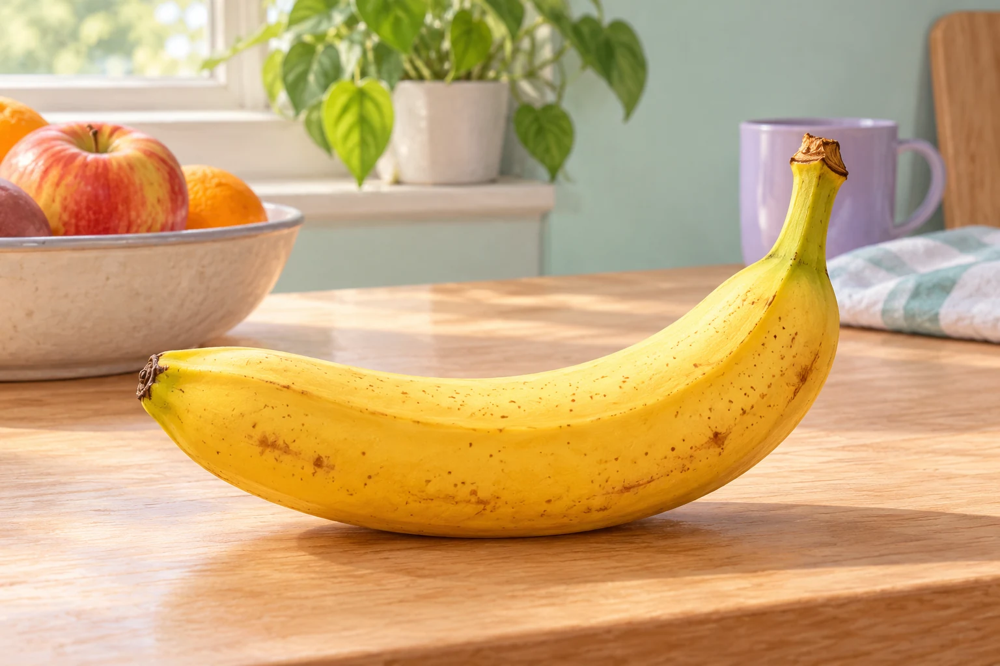

Zusatzaufgaben · Physik
Fermi-Aufgaben · Strahlung und Materie
Wählt eine Aufgabe und entwickelt euren eigenen Lösungsweg.

Aufgabe 25 · Q2 GK
Radioaktive Zerfälle im natürlichen Kalium
Eine Banane enthält natürliches Kalium und damit auch einen kleinen Anteil des radioaktiven Isotops Kalium-40. Wie viele Kalium-40-Zerfälle finden ungefähr an einem Tag in einer Banane statt?